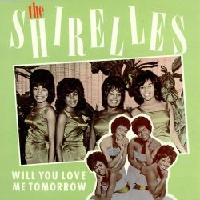
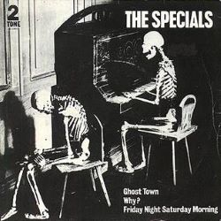
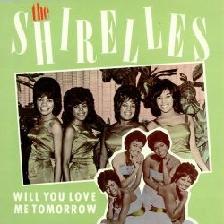
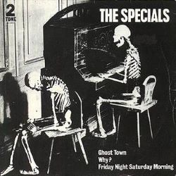
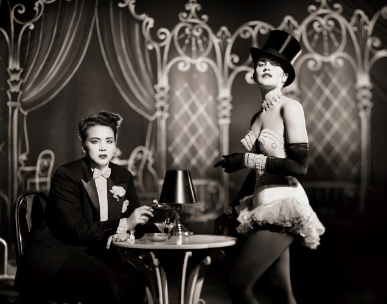

I like a lot of genres, especially dream pop, electronic, and new wave. I grew up with goth parents who listened to a lot of industrial music, like Skinny Puppy, and more avant-garde stuff, like The Residents, so I like some of that because it's nostalgic for me.
 



Classical composers:
I've always loved classical music, especially from the 17th-18th centuries. When I was a teenager, I really wanted to learn to play harpsichord and pipe organ but never found anyone to teach me. I remember spending hours looking at harpsichords and clavichords for sale, daydreaming about getting one!
I also like Tchaikovsky and some of the other Russian fellas from the 19th century.
J.S. Bach, Arcangelo Corelli, John Dowland, Handel, Mozart, Tchaikovsky
Wendy Melvoin
I'm originally from Minnesota and am therefore required to love Prince, but I didn't know much about the various members of his bands until a couple of years ago. Wendy was a member of his backing band, The Revolution, in the mid-80s. She wrote and performed the iconic guitar intro bit for Purple Rain.
Her girlfriend at the time, Lisa Coleman, was also a keyboardist for the band. After The Revolution, they formed their own band called Wendy and Lisa. They've also done a bunch of movie and tv soundtracks and won an Emmy in 2010. I have a huge crush on this woman. Here are a bunch of pictures of her, along with Lisa and Prince, mostly from the 80s.
 Back
Back